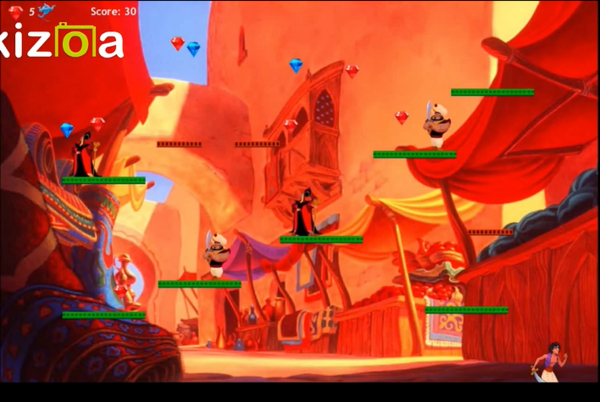
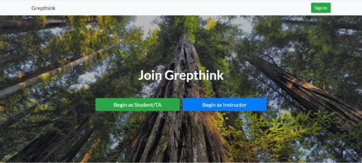

Edward Nguyen
Software Engineer + Full Stack Developer
As an engineer, I specialize in Software Systems and Data Storage. As a web developer, I specialize in Django stack.
I'm also exploring creative pursuits in game development, cloud applications, and Artificial Intelligence.
Featured Projects
View selected projects below. More information can be found at my Github page.
Game of Warriors
Game of a warriors is a 2-D side scroller game. The goal is to get as many points as possible without dying by collecting jewels. Obstacles included moving platforms and enemies.
Technologies used: Greenthink | Java | Slack | Google Drive
View source codeGrepthink
Grepthink is a website that provides suggestions for group management. The goal is to built better teams one match at a time.
Technologies used: Django | HTML | CSS | Python | JSON | Heroku
View live siteWork Experience
Software Engineer I
AMETEK Surface Vision
February 2018 - November 2019
Design software used for automated surface inspection. Created and maintained operating system server images that are compatible with software applications.
Key contributions:
- Managed pre-existing Windows system server images through regular updates; resulting in 20% less complaints by customers.
- Executed the release of new hardware that supports multiple options for data storage and multiplexing, improving processing speed by 10x.
- Contributed to refactoring and debugging software code to provide higher quality surface inspection.
- Created a test location that contains a variety of operational system servers used for benchmark testing, discovering 12% of bugs before releasing latest software version.
Software Engineering Intern
AMETEK Surface Vision
July 2017 - Jan 2019
Become familiar with online surface inspection applications through software development. Assisted other engineers with troubleshooting application problems/setup.
Key contributions:
- Demonstrated mastery in system integration for customer systems, saving resources by 25%.
- Initiated the creation of virtual servers in compliance with customer demands, resulting in $100,000 of additional sales.
- Released new Windows 10 and Windows Server 2016 OS server images, increasing revenue by 15%.
- Communicated with other engineers to bring forth the need for a standardized procedure, therefore having a way to address technical complaints by customers.
Education
San Jose State University - San Jose, CA (Current)
Masters of Science in Software Engineering (MSSE), 2018
Specialization in Software Systems Engineering.
University of California, Santa Cruz - Santa Cruz, CA
Jack Baskin School of Engineering Computer Science and Engineering, 2013
Honors in Computer Science and enrolled in Educational Opportunity Program.